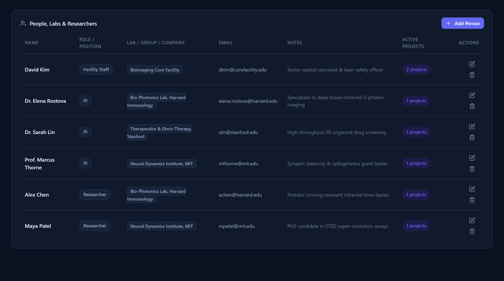
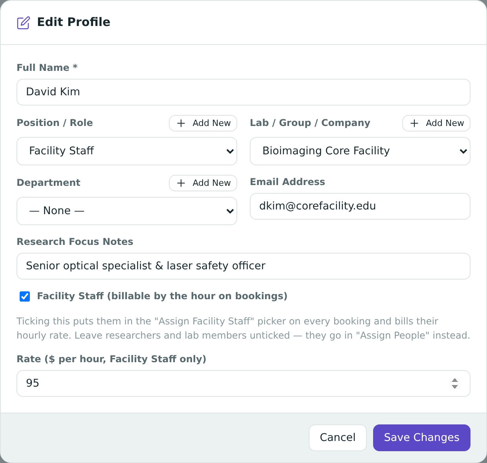

Chapter 6
People & Labs
Everyone who touches your facility — researchers, PIs, and the staff who run the instruments — lives in one directory, along with the labs and departments they belong to.
What you'll be able to do
- Add a new person to the directory, with the right role, lab, and contact details.
- Understand the Facility Staff flag — who it applies to, and why it controls billing.
- Add a new lab or department on the fly — and know when it actually gets saved.
- Retire a person who has left, without losing any history they're part of.
- Filter the People directory to find who you're looking for.
Adding a person
- Go to People & Labs in the sidebar.
- Choose Add Person.
- Enter their name.
- Pick a Position/Role from the list, or choose + Add New to create one that doesn't exist yet.
- Pick (or add) their Lab/Group and Department — see Labs & departments below.
- Add an email address if you have one — it's what lets this person be emailed later from a booking (see Emailing Attendees).
- If this person operates instruments and should be billed for their time, tick Facility Staff and set their hourly rate — see the next section.
- Save.

The Facility Staff flag — who gets billed vs. who just attends
Not everyone in the directory is treated the same way when it comes to money. The app draws one clear line:
- Facility Staff are the people who operate instruments and run sessions on behalf of the facility — think of the technician who sits at the microscope. They have an hourly rate, and their time on a booking is billed.
- Everyone else — researchers, PIs, students — are attendees. They can be listed on a booking to record that they were there, but they are never billed for their time.
To mark someone as facility staff:
- Open the person's record (or start adding a new one).
- Tick the Facility Staff checkbox.
- Enter their Rate per hour — this is what gets charged when they're booked to help run a session.
- Save.


🔍 Why it works this way. A booking often has a room full of people, but only one or two of them are actually running the equipment on the clock. Splitting "who was there" from "who gets paid for their time" means you can log a full list of attendees for your records without accidentally billing every researcher in the room. Only people flagged Facility Staff show up in a booking's "Assign Facility Staff" picker at all — everyone else can only ever be added as a plain attendee. For the bigger picture on why this split exists, see The Big Ideas.
💡 Tip. Use the "Facility staff only" filter in the People directory to quickly see everyone who can be booked as staff, along with their rates.
Labs & departments — and the "+ Add New" caveat
Lab/Group and Department aren't a fixed list you're stuck with — they're built up from whatever the people already in your directory have. When you type or pick one for a new person, you're either choosing an existing value or creating a brand new one on the spot with + Add New.


⚠️ Careful — a new lab or department only sticks when you actually save the person. If you type a new Lab/Group name using + Add New and then close the form without saving (or cancel out of it), that new lab name is thrown away — it never gets added to the shared list, and the next person you add won't see it as a choice. If you need a new lab to exist, the fastest safe way is to save at least one person into it.
🔍 Why it works this way. There's no separate screen for "manage labs" — the list of labs is simply read off the people who already belong to one. That keeps things simple, but it means a lab only really exists once someone is actually saved as being in it. See also Appendix A for this exact gotcha, and Appendix A for the related trap of typos creating accidental duplicate labs.
💡 Tip. Because a typo (say, "Bio-Photonics" vs. "BioPhotonics Lab") creates two separate labs as far as the app is concerned, it's worth double-checking existing spellings before typing a new one — pick from the dropdown whenever the lab already exists rather than retyping it.
Retiring and restoring a person
People leave labs, graduate, or move on. When that happens, you don't delete them from the app — you retire them.
- Open the person's record.
- Choose Retire.
- The app looks at everything this person is connected to and shows you a dialog.
🔍 Why it works this way — the app decides delete vs. retire, not you. If this person has never been used anywhere — no projects, no teams, no milestones, no bookings — the app offers a real, permanent Delete instead, because there's nothing to protect and it was likely a typo or a duplicate entry. But the moment a person has any history attached (they were a PI on a project, they attended or ran a booking, they own a milestone), the app will only let you retire them. This isn't a limitation you can override — it's protecting old records: a booking from six months ago that says "run by Dana" needs to keep saying that even after Dana leaves. See Appendix A and The Big Ideas for more on this pattern, which works the same way for instruments and projects.

Once retired, the person:
- Shows "(Retired)" next to their name everywhere they appear — this is just a label; nothing about the historical record itself changes.
- Disappears from pickers used for new work (you can't assign a retired person to a new booking or milestone).
- Stays exactly where they already were — as a milestone owner, a project's PI, an attendee or staff member on past bookings.
- Is hidden from the main People list by default, behind a Show retired (n) toggle.

To bring someone back, open their record while retired people are shown, and choose Restore.
🧪 Try it. Load the sample data, retire one of the demo researchers who has bookings, then open one of their old bookings — notice their name still shows there, now labelled "(Retired)." Then open the "Assign People" picker on a new booking and confirm they no longer appear as a choice.
Project teams
A person can be added to a project's team with a specific role (for example, "Principal Investigator" or "Collaborator"). Removing someone from a team just takes them off that project's roster — it does not delete or retire them. See Projects for how to manage a project's team.
Finding people in the directory
The People screen gives you a few ways to narrow a long list:
- Search — free-text, matches names and other details.
- Role filter — show only people with a particular Position/Role.
- Show retired (n) — reveals people who've left (hidden by default).
- Facility staff only (n) — shows only people flagged as billable staff, useful for reviewing rates.

Check yourself
A researcher attends a booking but never operates the microscope. Should you tick Facility Staff for them?
No. Facility Staff is only for people who operate equipment and get billed hourly for it. A researcher who is simply present is an attendee — they're never billed regardless of this flag.
You type a brand-new lab name into "+ Add New" while adding a person, then close the form without saving. Does the new lab exist now?
No — a new lab or department name only becomes real once you actually save a person with it. Closing or cancelling the form throws it away.
You try to retire a person and the app offers to delete them instead. Why?
Because that person has zero history — no projects, teams, milestones, or bookings reference them. With nothing to protect, the app treats it as a likely typo or duplicate and offers a true delete instead of a retire.